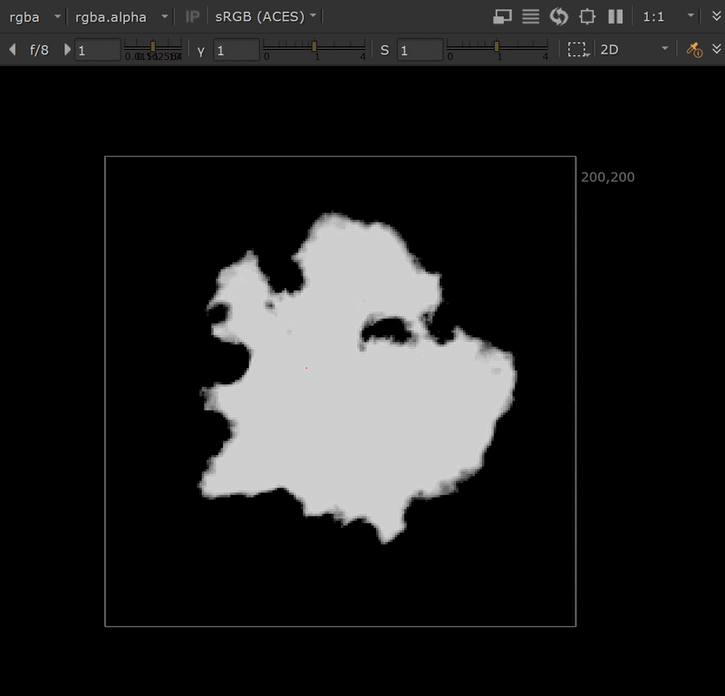
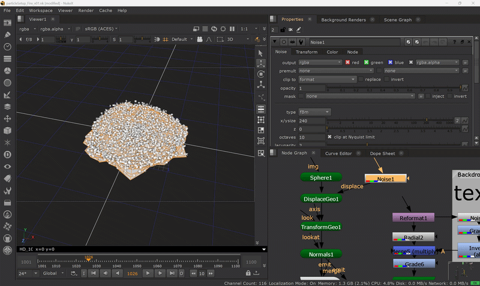
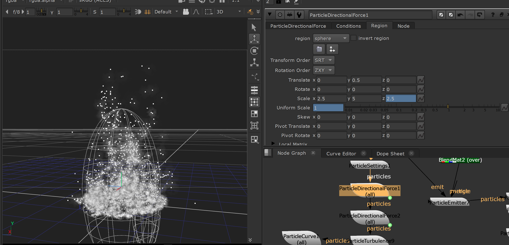
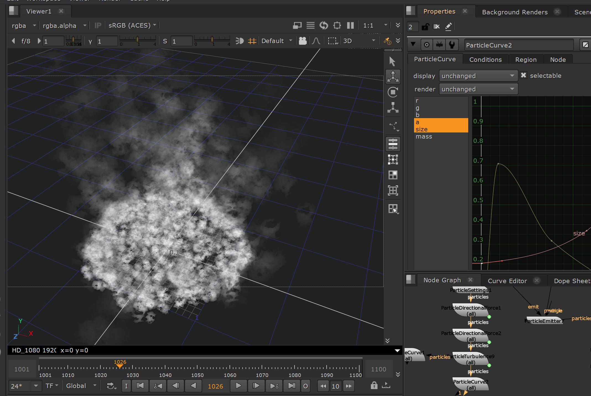

preview
Overview
After experimenting with Houdini pyro, I wanted to reinterpret fire inside Nuke using only native particle and compositing tools. The goal was not to build a physically accurate pyro solver, but to create a controllable stylized campfire setup using particle emitters, procedural fire textures, force fields, and post-render image treatment.
Technical Breakdown
- The fire was built using native Nuke particle nodes.
- The setup starts with a procedural fire sprite built from animated turbulence noise and a radial falloff. This texture is used as the visual source for the particles, giving each particle an internal flame-like breakup rather than a flat solid color.
- For the emission source, I used a flattened and displaced sphere as a custom emitter surface. This allowed the flame to originate from a wider campfire base instead of a single point emitter.
- The fire is separated into multiple particle behaviors: a dense flame body, a lighter ember layer, and a post-render motion smear pass. Region-based directional forces push the flame upward, while localized turbulence breaks up the silhouette. ParticleCurve nodes control size and opacity over particle age to shape the flame lifecycle.
- After rendering the particles through ScanlineRender, I generated a custom vector pass from image gradients and used VectorBlur to stretch the rendered particles into a more flame-like motion. Additional grading, sharpening, and glow were used to integrate the final fire pass.

Noise-based sprite texture, animated turbulence and radial falloff used to create the procedural fire sprite.

I used a procedurally displaced and flattened sphere as the emission surface, allowing the flame to originate from a broad campfire base

Directional Force pushes the particle volume upward to establish the main flame motion.

ParticleCurve controls opacity and size over particle age, shaping the flame from base to tip.

Final particle render after vector blur, grading, sharpening, and glow treatment.
What I learned
This study helped me understand the difference between using particles as simple sprites and shaping them as a layered FX element. The flame body, smoke, and embers required different motion behaviour, lifetime curves, and post-render treatment. I also found that proxy geometry is more useful as an occlusion and shaping tool for the main flame, while bounce-style interaction works better on small ember particles.